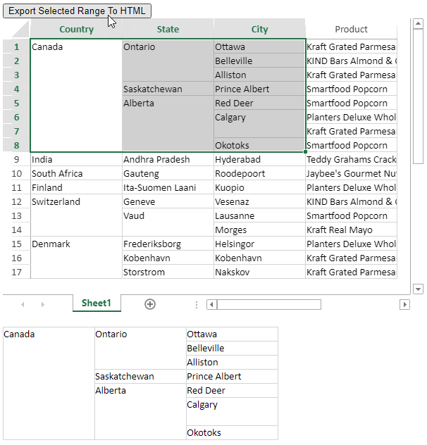

You can export a range of cells or an entire worksheet to an HTML string using toHTML method of the CellRange class.
The toHTML method provides two parameters, includeStyle and headerOptions. The includeStyle parameter indicates whether or not to include style and span, and its default value is true. The headerOptions parameter indicates whether or not to include row or column header, when the cell range is whole rows or whole columns in the view port area.
The HeaderOptions enumeration has 4 options as follows:
You can use the includeStyles parameter to specify whether you want to include the cell styling when exporting the range to HTML string. The default value for this parameter is true.
Below are the features that are supported when exporting range to HTML.
Below are the features that are unsupported when exporting a range to HTML.
Use the toHTML method to export selected range to HTML string both at runtime and via code.
You can use the toHTML method to export the selected range of viewport area to HTML string at runtime. The following example exports the selected range of cells at runtime in html.

The following code exports the selected range of viewport area to HTML string at runtime.
| JavaScript |
Copy Code
|
|---|---|
//Gets the Html content from selected range of viewport area to an htmlContainer var r, c, rc, cc; // Acquiring selection range var selectedRanges = activeSheet.getSelections(); r = selectedRanges[0].row; rc = selectedRanges[0].rowCount; c = selectedRanges[0].col; cc = selectedRanges[0].colCount; var html = activeSheet.getRange(r, c, rc, cc).toHtml(); document.getElementById("htmlContainer").innerHTML = html; |
|
You can also export the selected range of viewport area to HTML string at backend, using code and not at runtime.
The following code exports a specific range of cells [A1:B8] in the worksheet to HTML string.
| Javascript |
Copy Code
|
|---|---|
// Gets the Html content from range "A1:B8" of viewport area to an htmlContainer var html = activeSheet.getRange("A1:B8").toHtml(); document.getElementById("htmlContainer").innerHTML = html; |
|
Use the toHTML method to export the entire worksheet to HTML string. The following example exports the entire worksheet containing information about the sale of products in different cities and states across the countries.
The following code exports the whole worksheet to HTML string.
| JavaScript |
Copy Code
|
|---|---|
// Gets the Html content from viewport area having data to an htmlContainer var html = activeSheet.getRange(-1, -1, -1, -1).toHtml(GC.Spread.Sheets.HeaderOptions.allHeaders); document.getElementById("htmlContainer").innerHTML = html; |
|